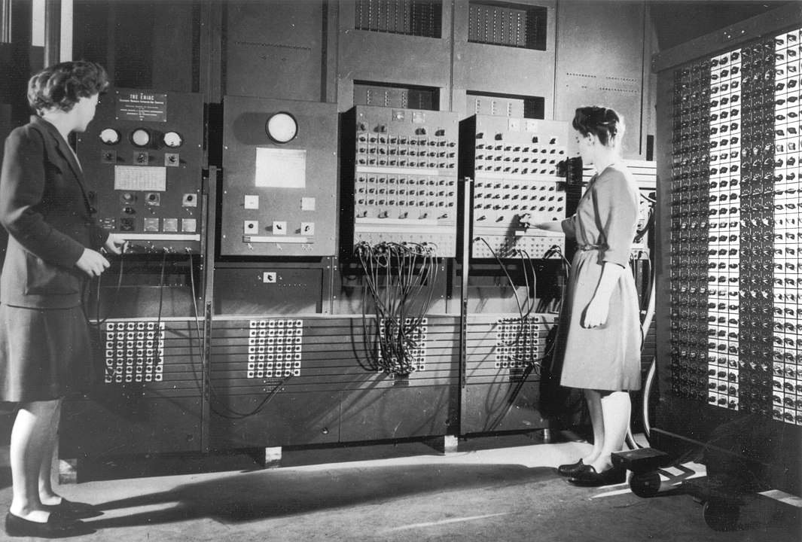
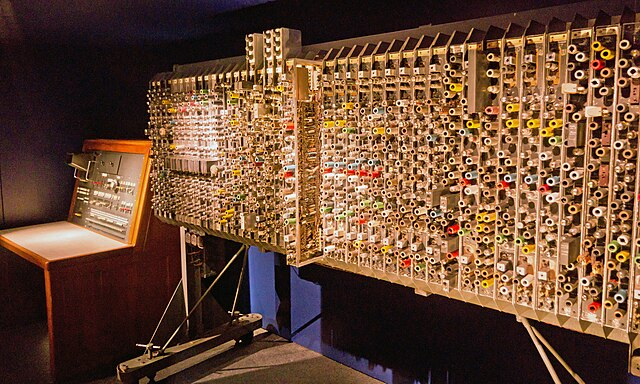
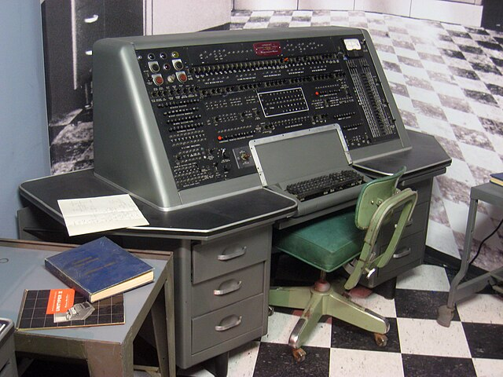
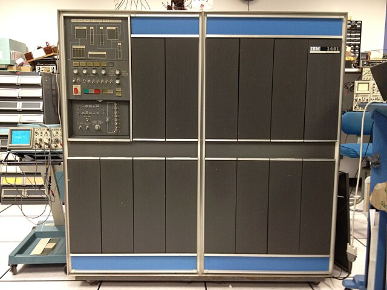

History of Computing (Swade, 2022 )
| Title | Author | Publication date | Resource type |
|---|---|---|---|
| The History of Computing: A Very Short Introduction | Doron Swade | 2022 | Book |
Timeline
A typical timeline approach rooted in major innovations.
- Ancient aids to counting: knotted cords and notched sticks
- Ancient aids to calculation: counting boards and abacii
- Early mechanical calculator devices in the 17th century (number wheels, Pascal, Leibniz)
- Modern aids to calculation: slide rules following the discovery of logarithms
- Mechanised, automated calculating engines of Babbage in the 19th century
- Punched-card machines leading to IBM in the early 20th century
- Analogue and electro-mechanical computers of the early 20th century inclusive of wartime computers
- Early valve-based (vacuum-tubed) digital computers (again wartime and early Cold War)
- The invention of the transistor and first fully-digital computers
- The invention of integrated_circuits
- Supercomputers
- Minicomputers
- Consumer personal computers
- Internet and later, Web
- Smart phones
First three phases of digital electronic computers:
- Wartime up to 1950s vacuum-tube era
- Transistor era up to 1963
- First microchip era ending in early 1970s
Terms
| Term | Definition |
|---|---|
| automatic | can execute programs, process data and perform functions on its own once it has been started. Can monitor its own processes and make adjustments without human intervention |
| general-purpose | a computer designed to be able to solve a wide variety of problems and perform many different types of tasks as opposed to a computer built for a specific, limited purpose |
| programmable | the ability to change the operations a computer peforms without physically altering its hardware |
Mechanical calculating devices in the 17th century
Focus was chiefly on creating a desktop calculator capable of four-function arithmetic.


The main contenders were the Pascaline of Pascal (which only did cumulative addition) and the wheel or “stepped drum” calculator of Leibniz that could do all operations (in theory).
Subsequent designs were based on these artefacts. In practice, neither worked consistently well with the carriage of tens remaining a sticking point.


The arithmometer (crank driven) and comptometer (key-driven) were descendents of the Leibniz design that became commercially viable by the 19th century along with other mechanical calculators. In the US, Burroughs dominated the market.
Babbage: mechanized, automated calculation
I wish to God these calculations had been executed by Steam (Babbage)
With Babbage’s machines we see an approach to computation that can only be understood against the backdrop of the Industrial Revolution in which they were conceived.
The idea is that the machine is a factory and number is the product. In the same way as the mechanised looms created textiles. It is the extension of a model of industrial production from goods/commodities to information.
Babbage conceived two machines: the Difference Engine (DE) and the Analytical Engine (AE). Neither were successfully built in his lifetime. The DE preceded the AE and was basically an advanced mechanical calculator whereas the AE approximated a general purpose computer.
Despite this, with the Difference Engine, in contrast to preceding aids to calculation, the steps of the computational algorithm were no longer directed by human intelligence but by internal rules embodied in the mechanism and automatically generated.
Difference Engine
The DE’s single purpose was to calculate and output mathematical tables such as the results of polynomial equations. The idea was that you would input the answer a bell would ring and the machine would halt. This influenced Turing later. It was non-programmable and designed for a specific set of calculations.
Analytical Engine
Conceived as a general-purpose computing machine capable of performing a wide range of calculations, programmable using punched cards similar to those used with Jacquard looms.
It more resembled modern computers in that Babbage used concepts that would later translate into the von Neumann architecture There was a “mill” (CPU), “store” (memory) and input/output mechanisms. It also had a concept of looping and conditional branching.
Lovelace’s insight
A central idea of Ada Lovelace, expressed in her notes on the Analytical Engine is that number can represent entities other than quantity.
If we assign meaning to number, results arrived at by operating on number according to rules can say things about the world when mapped back onto the world using the meanings assigned to them.
Lovelace’s insight was that the potential of computing lay in the power of machines to manipulate representations of the world contained in symbols.
Analogue computers
Both digital and analogue computers are automatic. They differ in how they represent quantities and how their outputs are derived.
With digital machines, quantity is represented as a string of discrete digits.
With analogue machines, quantity is a physical property in itself rather than a representation. This could be, for example: the lowering of a weight, the flow of a liquid, or an electrical charge. This physical behaviour is analagous to the system that is being modelled. Quantities are continuously variable values rather than discrete (discontinuous values).
Digital machines produce results by calculation whereas analogue machines produce results by measurement, e.g. the height of liquid in a tank or the time it taks for a tank to be emptied.
Examples of analogue computers
The Phillips Hydraulic Computer
This used fluid to model the workings of the British economy. It consisted of a series of transparent plastic tanks and pipes which were fastened to a wooden board.

Each tank represented some aspect of the UK national economy and the flow of money around the economy was illustrated by coloured water. At the top of the board was a large tank called the treasury. Water (representing money) flowed from the treasury to other tanks representing the various ways in which a country could spend its money. For example, there were tanks for health and education. To increase spending on health care a tap could be opened to drain water from the treasury to the tank which represented health spending.
Bush’s Differential Analyser
This was designed to solve differential equations by integration. In contrast to the Philips Computer it was general enough to be used to solve problems from different contexts. Examples of these contexts: heat flow, ballistics, mechanics, population growth, chemical interactions, astronomy.

It was about the size of a room and used shafts, motors, discs and wheels to work.
Historiography
There is a tendency in the history of computing to downplay or diminish the contribution of analogue computing devices and to present them as just an inferior precursor to the inevitable dominance of digital electronic computers.
This is ahistorical and inaccurate.
Analogue (and electromechanical devices) overlapped with and coexisted with digital devices for 40 years, spanning the first three generations of digital electronic devices. The term “analogue” itself only came about when the need arose to distinguish digital devices from other types of computer. They were not “rivals” before this.
Electro-mechanical computers
Electro-mechanical devices (also known as “electronic analogue computers”) are a sort of midway between full digital devices and analogue computers, forming a bridge between the two eras.
Their heyday was roughly 1935 - 1945.
Their key components were:
- relays for logic operations
- rotating shafts and gears for performing calculations
- punched cards or paper tape for input instructions and outputs
They were slower than fully digital computers as they were limited by the speed of moving components rather than the flow of electric charge. In addition the various mechanical parts were prone to wear and needed frequent replacement.
Examples of electro-mechanical computers
Harvard Mark 1 (1937-1944) - Aikin, IBM
Designed by Howard Aiken and built by IBM (1937-1944). Also known as the Automatic Sequence Controlled Calculator (ASCC). A general-purpose electro-mechanical computer it was most famously used at Los Alamos by von Neumann to calculate the blast yield of the atomic bomb.

It was more than 15m in length and weighed 5 tonnes comprising over 750,000 parts. It used paper tape and punched cards for input/output.
Complex Number Calculator (1940) - Bell Labs, Stibitz
Not general purpose nor was it programmable. It was hardwired to perform a specific set of operations on numbers and nothing else. It used relays like the others. Its distinguishing feature was that it used a teletype for input rather than cards or paper tape.


It comprised a panel (the calculating unit) and teletype (the input). One could remotely access the computer from the teletype in another location, providing it was connected to Bell Lab’s telephone network.
Z3 (1941) - Konrad Zuse

First designed in 1938 and completed in 1941. Considered the first fully automatic, programmable digital computer although relay-based. Programs were stored on external punched tape and binary was used as the number system. Destroyed by Allied bombing in the War but a replica (pictured) was built in 1998.
Vacuum-tube devices
Vacuum-tube devices were the first fully electronic digital devices as they used vacuum-tubes for implementing binary logic rather than relay switches.
Canonical examples from this era are the ABC computer, the Collossus and most famously, the ENIAC.
The Antanasoff-Berry Computer (1939 - 1942)

Fully automatic, digital electronic computer but not programmable or really general-purpose, being created to do linear equations. It took decimal input and output but operated internally using binary arithmetic. The input was punched cards and the output was via a front-panel display.
Its importance stems from the fact that it was the first to use vacuum-tubes for the arithmetic calculations of the processor.
Colossus (1943-1945) - Tommy Flowers/Max Newman
Designed and built at the Post Office Research Station at Dollis Hill. Used for cracking the Lorenz messages of the German high command.
Mainly important (beyond its role in the War) for establishing the viability of vacuum-tubes over relays. It comprised 2.4 thousand tubes.
Debatable the extent to which the Collosus can be called the first digital computer since it was not general purpose and not fully programmable.
Furthermore it was not even a complete solution in its context of application. The codebreakers would be given a certain advantage using the Collosus (narrowing the field of possible deciphering keys) but still need to use manual methods to break the code. It made decipher time shorter rather than executing the full diciphering. In contrast to, say, the Bombe computer that would identify the key for the days transmissions.
It’s actual influence is also hard to gauge because of the secrecy that remained in place after the War. Apart from those who worked on it, its technical advancements were not public knowledge until the late 1970s.
ENIAC (1945) John Mauchly/J.P Eckert
The Electronic Numerical Calculator and Integrator
The main motivation for creating the ENIAC was military: the US Army needed speed and accuracy when calculating artiliary firing tables and munition trajectory so that shells could hit their intended targets. Accuracy depended on myriad factors: gun elevation, shell shape and weight, explosive charge, distance, wind, temperature etc. Previously this had been done by human computers under the aegis of the Ballistic Research Laboratory.

It was not completed until after VE day but was used at Los Alamos after the War and retired in 1955.
The BRL commissioned the Moore School of Engineering at the University of Pennsylvania for the construction of an automatic electronic calculator.
It used vacuum-tubes, along with switches and realys. It used decimal rather than binary and had punch card input and output. It was crudely programmable and could be set up to work on different problems by rearranging the different components using switches and plugboards. But this took roughly two days.
Its design was very influential because it was made public and not classified.
EDVAC (1944-49) John Mauchly/J.P Eckert/ John von Neumann
Built at the Moore School for the BRL as a successor to ENIAC by Mauchly and Eckert whilst ENIAC was still operational. It’s architecture arose out of discussions between von Neumann and Mauchly and Eckert and was necessitated by the need to calculate the behaviour of the fissile materials in the atomic bomb.
It resulted in the famous First Draft of a Report on the EDVAC by von Neumann which is seen as the definitive statement of the modern digital programmable general-purpose computer.
As a result of the paper, von Neumann effectively got the credit for the invention even though it synthesised ideas from the ENIAC and the contributions of others to the EDVAC.
There was lots of disputed provenance and claims of plagiarism generally. Antanasoff won a legal claim against Eckert and Mauchly for stealing ideas from the ABC to make ENIAC.
// Add more on the hardware.
Concept of the internal stored program
Key innovation of the EDVAC was the internal stored program (ISP).
Solution to the problem of preceding computers requiring down-time when switching between applications and problem sets.
Circuitry would need to be reconfigured before the computer could run on the next problem
ISP removed the friction:
- the instructions comprising the program would be prepared on tape or punched cards and read into electronic memory
- the hardware configuration of the machine would remain the same accross different programs and require no reconfiguration, only the input program data would change
This was basically the invention of software. Both instructions and data shared the same memory space once they were read-in. Before, the data would be stored in memory but the instructions would be read one-by-one from the external storage media.
Key consequences:
- flexibility (no need for re-wiring)
- speed: fetching instructions from memory is quicker than fetching from external storage devicde
- self-modification: since they were in memory, programs could modify themselves during their execution (e.g. use branching conditions) and treating one program as data for another. This enabled more complex algorithms and also opened the possibility of higher-level languages and compilers
- simplified architecture: both programs and data in memory
- generalisation: computers could switch between different tasks simply by loading different programs
Post-EDVAC devices
There were several notable devices which attempted to implement the architecture described in the First Draft using vacuum tubes for logic operations and a variety of different electronic methods for memory:
- the Manchester “Baby”
- the Cambridge EDSAC
- Turing’s ACE computer
Manchester Baby (1948)

An experimental computer intended to create the von Neumann architecture using Williams_Tube_RAM
Developed at the Univesity of Manchester and completed in 1948.
Considered the first electronic stored-program computer and first to contain all the elements of a modern electronic digital computer.
EDSAC (1949) J.Wilkes et al.

Electronic Delay Storge Automatic Computer
Constructed by Maurice Wilkes and others at the Mathematical Laboratory of the University of Cambridge.
The second digital stored-program computer after the Manchester Baby.
It used vacuum-tubes for the arithmetical operations in the ALU and mercury delay line memory for the RAM.
Designed to be used by relatively non-specialist practitioners from other university departments who were expected to program it themselves. To this end, a formal programming paradigm was forged for the EDSAC which established the following:
- subroutines as a library of common procedures available to programmers (e.g. printing a result, reading input tape, program checking, mathematical operations)
- diagnostics: techniques for verifying program code and its correctness

- The key players wrote the first textbook on programming in 1951: The Preparation of Programs for an Electronic Digital Computer (Wilkes, Wheeler, and Gill)
The Automatic Computing Engine (ACE) (1946) Alan Turing
Technical design provided by Alan Turing working at the Mathematics Division of the National Physical Laboratory. The product of Turing’s theoretical work in “On Computable Numbers” where he proposes the concept of a Turing_machine and based on his experience with early single-purpose computing devices at Bletchley.
Due to secrecy over wartime work, it was hard for get Turing to build a fully electronic implementation since this would disclose advances made during the War. Tommy Flowers was intended to be brought in to build it but again this was scuppered over the classification of wartime technology. Had this not been the case, it is likely it would’ve been seen as on par with the EDVAC in its design, if not dwarfing it.
Turing proposed a stored program architecture with high-speed memory. It would be more perfomant than the EDVAC as a result.

- Turing’s actual design was not implemented as it was thought too ambitious given how powerful it would need to be. Instead a smaller prototype was made, the Pilot ACE. It used vacuum-tubes for logic, and mercury delay lines for memory. Data and memory was input via punched cards.
Further applications of the EDSAC architecture
LEO I
Built by Lyons Tea Company to manage business affairs (payroll, inventory, stock management)
Marked a shift from military and academic contexts for computers to business and data management.
IAS machines

Several machines were built at the Institute for Advanced Study utilising the “von Neumann” architecture and associated advancements such as vacuum-tubes and Williams’ tubes. There was the original IAS machine (1952) as well as the JOHNNIAC (1954) and MANIAC (1956).
Although their purpose was military (Los Alamos), their designs were public and widely studied making them influential outside of academia.
UNIVAC (1951)

Mauchley and Eckert, who had designed the ENIAC left the Moore School and went into business: Eckert-Mauchley Computer Corporation. This was bought by Remington Rand and in subsequent years became the main competitor to IBM.
In this capacity they built the UNIVAC: Universal Automatic Computer. It’s name being an embodiment of its nature as a general-purpose, electronic digital computer.
It used vacuum-tubes for logic and mercury delay lines for memory. It had multiple means of input/output including: directly via an operator console (basically a typewriter keyboard), magnetic tape for input and output, along with punched cards.

It was the first computer specifically designed to include business and administrative use. This was underscored by its first client: the US Census Bureau.
A key event was its succesful prediction of the 1952 general election. It correctly predicted a landslide for Eisenhower (against expectations). (This was so unlikely, they actually fudged the data because they thought the machine was way off.) It was a novelty on the results night but it cemented a certain concept of the computer in the public imagination - large, room sized machines with blinking lights.
Swade notes that Eckert and Mauchley effectively launched the US commercial computer industry with the UNIVAC.
IBM
First created in 1911 as a merger of four companies all involved in some capacity in business data processing. The most significant of these was the Hollerith Tabulating Machine Company who’s punched card machines had been used in the 1890 census, greatly reducing its collation time
Named IBM in 1924
UNIVAC represented the encroachment of computing devices into IBM’s market of punched-card based data-processing and effectively put IBM on notice.
To attack the threat IBM brought out three crucial machines: the 701, 702 and 650.
IBM’s approach to marketing their computers was to emphasise the comfort of continuity over the shock of the new represented by the UNIVAC. IBM had already captured the business market. Their computers would be more of the same, just faster and more powerful than their punched card machines due to the electronics. To this end they initially did not call their devices ‘computers’.
IBM were ultimately totally successful in their pivot to the computing market. By 1960 it owned over 70% of the data processing and computer market.
IBM 701 (“Defense Calculator”) (1952)

IBM’s first electronic computer. It directly competed with the UNIVAC for government contracts. It followed the prevailing approach of vaccuum tubes for logic and had a variety of storage methods: Williams tubes, magnetic tape , and magentic drums.
701s were used at Los Alamos and avionics companies. Some were also used to manage payroll in business contexts.
IBM 702 (“Tape Processing Machine”) (1953)

Focused primarily on business applications and targetted at businesses rather than government contracts. Less powerful than the 701.
IBM 650 (1953)

Low-cost general purpose machine using magnetic drum memory. Marketed as slower but more affordable than the 700 range. It was mass-produced unlike the others which were built for specific customers. It was in fact the first mass-produced computer in the world. It proved the breakout star in IBMs initial line up and sometimes called “IBM’s Model T”.

IBM offerred 650s to univesities at a 60% discount on the condition that the universities would establish courses in computing. This was shrewd as it meant that a whole generation of engineers and computer scientists learned on 650s and would prefer them in their research. It also created a pool of skilled users that would go on to work at IBM.
Donald Knuth dedicated The Art of Computer Programming to the 650.
It used magnetic drum memory along with vacuum-tubes.
IBM 1401 (1959)

Another IBM mainframe. Transistors replaced vacuum-tubes. Magnetic core storage replaced magnetic drum storage. It was housed in rectangular light-blue cabinets and the ubiquity of the 1401 in industry earned IBM the moniker ‘Big Blue’.
IBM System/360 (1964)

Named to suggest all-round compatibility - a family of mainframes designed to cover commercial and scientific applications. Considered one of history’s most successful computers.
Up until this point all IBM computers had a programming language unique to the specific processor. At that point there were about seven IBM computer models in active use and they were all incompatible with each other.

In contrast the 360 computers all used the same programming language. This meant they were interoperable with each others. Because the there were variants in the 360 ranges, customers could purchase a smaller system knowing they could expand it if their needs grew, without reprogramming their application software.
Magnetic core devices: Whirlwind and SAGE
Two devices that leveraged the new technology of magnetic_core_memory where the Whirlwind and SAGE computers. The ENIAC was also updated to use magnetic cores.

The Whirlwind computer (1953) was a flight simulator and the first to use magnetic cores. Crucially was able to operate in realtime for output.
The SAGE computer (Semi-Automatic Ground Environment) emerged as a response to the Soviet acquisition of the atomic bomb in 1949. The Americans realised they needed a much better early warning and air defence system that would allow them to identify bombers in their airspace and dispatch fighters.
To achieve this, it was necessary to detect enemy bombers with radar and compute an interception course. Alterations in the bomber flight path required continuous updates and real-time computation of directions for the responding fighter.
The resulting computer was SAGE (made by IBM) which was modelled on Whirlwind, using magnetic cores. SAGE computers were spread accross the continental US in sectors and managed by NORAD.

The SAGE system was operation between 1958-1984, receiving continual improvements and updates. In addition to magnetic cores it introduced many technological innovations that influenced computers generally: interactive screens, printed circuit boards, mass-storage devices, digital communication over telephone lines, time-sharing, along with advances in software.
Because so many private companies worked as contractors on SAGE (IBM, Burroughs, Bell Labs, RAND Corp), the military technology (both hardware and software) made its way from the military context to business and consumer computing.
An example of a civilian application of SAGE technology was airline booking systems, where booking reservation data needed to be processed in realtime. IBM worked with American Airlines to introduce this.
Transistor and integrated circuit revolution
The arc of modern computing history (and its main eras) can be presented as
- vacuum-tubes
- transistors
- integrated_circuits
The transistor was invented at Bell Labs in 1947 by William Shockley and others. They were not created with computers in mind. Instead they were first used in hearing aids (1953) and transistor radios (1954).
From the mid-1950s onwards they started being used in military computers.
They had several advantages over vacuum-tubes: they were durable and reliable with no required startup time, they were power efficient and small.
The actual period where transistors alone were supreme in the form of a transistor board was relatively short-lived and rapidly gave way to ICs.
Computers of the transistor era had the following components separate from each other: the transistors, wired connections, resistors and capacitors. Integrated circuits put these all on the same piece of silicon.
They were first manufactured by Fairchild Semiconductor which was an offshoot of Shockley’s Shockley Semiconductor Laboratory.
The initial marked for ICs was military and scientific: the Minuteman ICBM and computers of the Apollo spacecraft. This laid the groundworkd for later commercial use and the personal computer revolution.
Mini-computers
Mini computers did not threaten mainframes but they opened up a new class of user. They were vastly cheaper than a mainframe and only the size of a small fridge.
The main player was DEC (Digital Equipment Corporation) starting in the mid-1960s. The introduced the PDP-8 in 1965 (Programmed Data Processor). The PDP-8 used transisotrs and magnetic core memory. It was affordable to smaller businesses if not yet, consumers.
.jpg>)
The internals were made public and DEC encouraged making the machine extensible by users being permitted to create their own programs and specialised applications. This was a very different culture to IBM where technicians were required and machines were typically leased.
By 1988, DEC was the second largest computer company after IBM. This led to additional companies entering the mini-computer market: Data General, Honeywell, Hewlett-Packard.
Mini-computers died as a category in the mid-1990s in the wake of the PC.
The Personal Computer
The PC emerged out of advances in IC chip design - this was the engine of the PC.
Intel (newly founded by Robert Noyce and Gordon Moore) were charged with making custom chips for a Japanese calculator company. Instead of creating the custom chips, they advised the company to use a general purpose chip that could handle general computing as well as the basic calculator functions. This generic chip - the Intel 4004 - was the microprocessor combined with three other ICs (comprising 2.3k transistors) that comprised the fundamental building blocks of the von Neumann architecture.

However it took until the Apple II in 1977 for the phrase “personal computer” to enter the lexicon and become an identifiable class.
The broader context for this was the computer hobbyists in Silicon Valley/Menlo Park (particularly the Homebrew Club of amateur computer engineers) along with idealistic figures from the 60s counterculture (such as Stuart Brand) who began associating computing technology as a tool of personal liberty and fulfillment.
Microsoft and Apple
The PC “boom” began with the Altair 8800. This was a mail-order kit that required manual assembly. It was released by Micro Instrumentation Telemetry Systems (MITS) in 1975. It couldn’t do much but had expansion capability (memory, teletype interface, casette player for data storage).

Bill Gates and Paul Allen made a proposal to MITS: they would write software that would allow users to program the Altair in BASIC. They agreed and were prepared to distribute the software. As a result Gates and Allen founded Microsoft in 1975.
Around the same time, Steve Wozniak (member of the Homebrew club) built the Apple I as a single-board hobbyist project. He made this available to buy via mail order and formed Apple with Steve Jobs in 1976 to manage the enterprise.

By 1977 they had investment capital and brought out the Apple II. This was sold preassembled with casing and required no soldering. It had expansion slots for third-party vendors to create compatible devices and had colour graphics.
The design of the Apple II was published in Byte in order to invite crowd-sourced plugins and extensions. One of these was the Z-80 softcard which allowed it to run the CP/M OS (created by the company Digital Research) giving ready-made access to software such as a word-processor, spreadsheets and databases.

Other competitors in the PC market at this time were Radioshack’s TRS-80 and the Commodore PET.
IBM
All the while it was hobbyist and tinkerers driving the PC market, IBM had no real interest. When PCSs started being used by businesses and their capacity grew to include typical business applications (databases, spreadsheets) it sensed an incursion into its market.

Thus, in 1981, IBM launched the “IBM Personal Computer” which rapidly became the industry standard. This had the effect of legitimising the concept of a PC. There was overwhelming demand. In their marketing IBM melded home and office use to capture both markets at once.
The internal specification of the IBM PC was freely available (dubbed ‘open architecture’), in contrast to IBM’s business computers, to encourage software expansion. Cards could be created to fit in its expansion slots adding graphics, sound, additional memory and networking capability.
IBM originally contracted Digital Research to create software based on CP/M but this fell through. Microsoft got the deal to supply the OS which became MS-DOS (Microsoft Disk Operating System). Henceforth every PC and PC-clone came with DOS bundled.